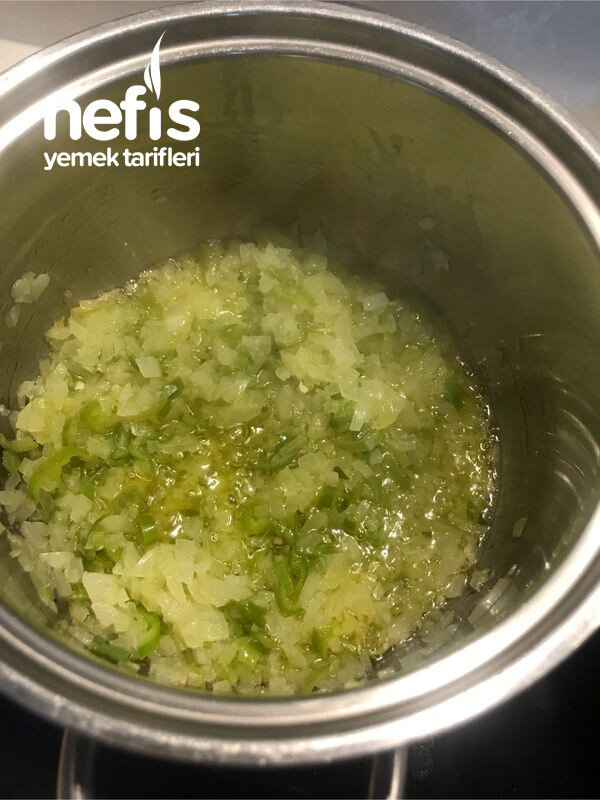

🍽️ 2-4 kişilik⏱️ Hazırlık: 10 dk🔥 Pişirme: 20 dk🏷️ Sebze Yemekleri🏷️ Ev Yemekleri
Malzemeler
- Yarım kahve fincanı kadar zeytinyağı
- 1 adet soğan
- 2-3 yeşil biber
- 2 su bardağı küçük doğranmış domates
- 1,5 su bardağı su
- 2 kaşık pirinç
- 1 çay kaşığı toz biber
- Tuz
Hazırlanışı
- Soğanları mümkün olduğu kadar küçük doğruyoruz.
- Tencereye yağımızı koyup soğanları kavurmaya başlıyoruz.
- Biberleri de ince doğrayıp ilave ediyoruz.
- Hafif karamelize olan soğanlara domatesi ilave edip kavurmaya devam ediyoruz.
- Kavrulan domateslere bir çay kaşığı kadar toz kırmızı biber ilave ediyoruz.
- Suyunu koyarak kaynamasını bekliyoruz.
- Kaynamaya başladıktan 4-5 dakika sonra yıkanmış pirinçleri ilave ediyoruz.
- Ocağı kısıp pirinçlerin pişmesini bekliyoruz tuzunu ilave ediyoruz.
- Pirinçler dağılmadan, hafif sulu kalacak şekilde ocağı kapatıyoruz.
- Soğutmadan yiyoruz. Afiyet olsun 😊.